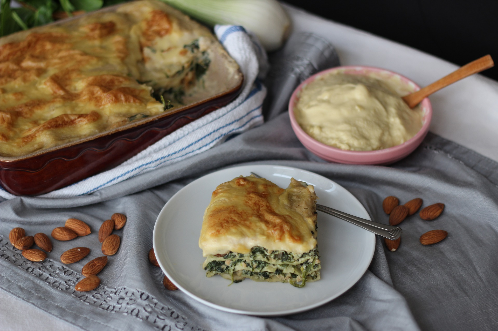

Hamburguesa de quinoa
Hamburguesa de quinoa
Hamburguesa de quinoa
Hamburguesa de quinoa
INGREDIENTES (6 porciones)
PREPARACION
1. Si no tenes quinoa cocida, lavarla 7 veces y cocinarla 15 minutos
en agua hirviendo. Luego escurrir y dejar enfriar.
2. Mezclar todos los ingredientes en un recipiente. Batir los huevos antes.
3. Hacer las hamburguesas inmediatamente o
dejar reposar la mezcla en la heladera.
4. Formar las hamburguesas apretando bien
para que no se desarmen al cocinarlas.
- 5. Cocinarlas hasta que se doren por fuera y se calienten por dentro.
- Y VOILÀ! Un camino de ida...

Lasagna de espinacas
INGREDIENTES (4 porciones)
PREPARACION
- 1. Rehogar la cebolla y el pimiento a fuego medio hasta que la cebolla esté transparente.
- 2. Añadir la espinaca, salpimentar a gusto y cocinar todo unos minutos mas.
3. En una fuente mediana colocar la siguiente secuencia: salsa blanca, 4 placas
de lasagna, relleno, queso cremoso, salsa blanca y repetir lo mismo 3 veces.
4. Sobre la última capa, la de las placas de lasagna, poner salsa blanca y
queso rallado a gusto.
5. Llevar la fuente a horno, previamente calentado a 180°, hasta que las placas
estén cocidas y el queso gratine.
- RIQUISIMO!
Albóndigas de berenjenas
INGREDIENTES (12 porciones)
PREPARACION
1. Cortar la berenjena en láminas y dejarlas reposar en sal durante media hora.
Enjuagarlas con agua, secarlas bien y dorarlas en una sarten, 1 minuto de cada lado.
- 2. Procesar la berenjena con sal, queso rallado y pan rallado hasta lograr una pasta.
- 3. En un bowl colocar la pasta de berenjenas junto con la clara de huevo y mezclar.
- 4. Formar las albóndigas y pasarlas por pan rallado.
- 5. Dorarlas en una sartén con muy poquito aceite.
- Listo! Podes usarlas para hacer una salsa o como acompañamiento.